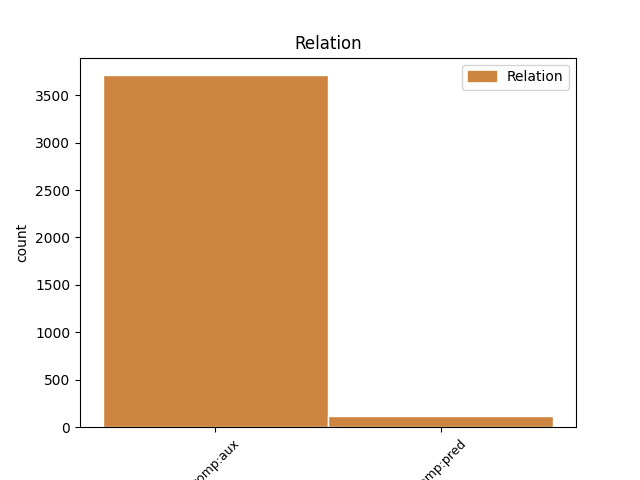

Distribution of features within this leaf

Agreement Rules sorted by frequency.
- When the dependent token is the complement for auxiliary(comp:aux) of the head token,
1 El _ _ _ _ 0 _ _ _
2 pacto _ _ _ _ 0 _ _ _
3 se _ _ _ _ 0 _ _ _
4 firmó _ _ _ _ 0 _ _ _
5 cuando _ _ _ _ 0 _ _ _
6 Josep _ _ _ _ 0 _ _ _
7 Piqué _ _ _ _ 0 _ _ _
8 , _ _ _ _ 0 _ _ _
9 ex _ _ _ _ 0 _ _ _
10 presidente _ _ _ _ 0 _ _ _
11 de _ _ _ _ 0 _ _ _
12 Ercros _ _ _ _ 0 _ _ _
13 , _ _ _ _ 0 _ _ _
14 ya _ _ _ _ 0 _ _ _
15 era _ _ _ _ 0 _ _ _
16 ministro _ _ _ _ 0 _ _ _
17 y _ _ _ _ 0 _ _ _
18 ha _ _ _ _ 0 _ _ _
19 sido ser AUX AUX Gender=Masc|Number=Sing|Tense=Past|VerbForm=Part 0 _ _ _
20 calificado calificar VERB VERB Gender=Masc|Number=Sing|Tense=Past|VerbForm=Part 19 comp:aux _ _
21 de _ _ _ _ 0 _ _ _
22 trato _ _ _ _ 0 _ _ _
23 de _ _ _ _ 0 _ _ _
24 favor _ _ _ _ 0 _ _ _
25 por _ _ _ _ 0 _ _ _
26 la _ _ _ _ 0 _ _ _
27 oposición _ _ _ _ 0 _ _ _
28 parlamentaria _ _ _ _ 0 _ _ _
29 . _ _ _ _ 0 _ _ _
1 En _ _ _ _ 0 _ _ _
2 Alcalí _ _ _ _ 0 _ _ _
3 ( _ _ _ _ 0 _ _ _
4 Alicante _ _ _ _ 0 _ _ _
5 ) _ _ _ _ 0 _ _ _
6 , _ _ _ _ 0 _ _ _
7 finalmente _ _ _ _ 0 _ _ _
8 , _ _ _ _ 0 _ _ _
9 un _ _ _ _ 0 _ _ _
10 cigarrillo _ _ _ _ 0 _ _ _
11 pudo poder AUX AUX Mood=Ind|Number=Sing|Person=3|Tense=Past|VerbForm=Fin 23 comp:pred _ _
12 ser _ _ _ _ 0 _ _ _
13 la _ _ _ _ 0 _ _ _
14 causa _ _ _ _ 0 _ _ _
15 de _ _ _ _ 0 _ _ _
16 otro _ _ _ _ 0 _ _ _
17 fuego _ _ _ _ 0 _ _ _
18 que _ _ _ _ 0 _ _ _
19 arrasó _ _ _ _ 0 _ _ _
20 200 _ _ _ _ 0 _ _ _
21 hectáreas _ _ _ _ 0 _ _ _
22 , _ _ _ _ 0 _ _ _
23 informaron informar VERB VERB Mood=Ind|Number=Plur|Person=3|Tense=Past|VerbForm=Fin 0 _ _ _
24 a _ _ _ _ 0 _ _ _
25 la _ _ _ _ 0 _ _ _
26 agencia _ _ _ _ 0 _ _ _
27 Efe _ _ _ _ 0 _ _ _
28 fuentes _ _ _ _ 0 _ _ _
29 de _ _ _ _ 0 _ _ _
30 la _ _ _ _ 0 _ _ _
31 Generalitat _ _ _ _ 0 _ _ _
32 Valenciana _ _ _ _ 0 _ _ _
33 . _ _ _ _ 0 _ _ _
Disagree Examples:
1 Sobre _ _ _ _ 0 _ _ _
2 la _ _ _ _ 0 _ _ _
3 oferta _ _ _ _ 0 _ _ _
4 de _ _ _ _ 0 _ _ _
5 interconexión _ _ _ _ 0 _ _ _
6 con _ _ _ _ 0 _ _ _
7 Telefónica _ _ _ _ 0 _ _ _
8 de _ _ _ _ 0 _ _ _
9 otros _ _ _ _ 0 _ _ _
10 operadores _ _ _ _ 0 _ _ _
11 que _ _ _ _ 0 _ _ _
12 acaba _ _ _ _ 0 _ _ _
13 de _ _ _ _ 0 _ _ _
14 aprobar _ _ _ _ 0 _ _ _
15 la _ _ _ _ 0 _ _ _
16 CMT _ _ _ _ 0 _ _ _
17 , _ _ _ _ 0 _ _ _
18 Vázquez _ _ _ _ 0 _ _ _
19 Quintana _ _ _ _ 0 _ _ _
20 dijo _ _ _ _ 0 _ _ _
21 que _ _ _ _ 0 _ _ _
22 para _ _ _ _ 0 _ _ _
23 desarrollar _ _ _ _ 0 _ _ _
24 la _ _ _ _ 0 _ _ _
25 han haber AUX AUX Mood=Ind|Number=Plur|Person=3|Tense=Pres|VerbForm=Fin 0 _ _ _
26 escuchado escuchar VERB VERB Gender=Masc|Number=Sing|Tense=Past|VerbForm=Part 25 comp:aux _ _
27 a _ _ _ _ 0 _ _ _
28 los _ _ _ _ 0 _ _ _
29 operadores _ _ _ _ 0 _ _ _
30 actuales _ _ _ _ 0 _ _ _
31 y _ _ _ _ 0 _ _ _
32 a _ _ _ _ 0 _ _ _
33 otros _ _ _ _ 0 _ _ _
34 que _ _ _ _ 0 _ _ _
35 pronto _ _ _ _ 0 _ _ _
36 darán _ _ _ _ 0 _ _ _
37 servicios _ _ _ _ 0 _ _ _
38 y _ _ _ _ 0 _ _ _
39 que _ _ _ _ 0 _ _ _
40 al _ _ _ _ 0 _ _ _
41 tener _ _ _ _ 0 _ _ _
42 que _ _ _ _ 0 _ _ _
43 aunar _ _ _ _ 0 _ _ _
44 tantos _ _ _ _ 0 _ _ _
45 intereses _ _ _ _ 0 _ _ _
46 es _ _ _ _ 0 _ _ _
47 imposible _ _ _ _ 0 _ _ _
48 dejar _ _ _ _ 0 _ _ _
49 satisfechos _ _ _ _ 0 _ _ _
50 a _ _ _ _ 0 _ _ _
51 todos _ _ _ _ 0 _ _ _
52 . _ _ _ _ 0 _ _ _
1 Este _ _ _ _ 0 _ _ _
2 documento _ _ _ _ 0 _ _ _
3 , _ _ _ _ 0 _ _ _
4 que _ _ _ _ 0 _ _ _
5 ha haber AUX AUX Mood=Ind|Number=Sing|Person=3|Tense=Pres|VerbForm=Fin 0 _ _ _
6 tomado tomar VERB VERB Gender=Masc|Number=Sing|Tense=Past|VerbForm=Part 5 comp:aux _ _
7 como _ _ _ _ 0 _ _ _
8 referencia _ _ _ _ 0 _ _ _
9 la _ _ _ _ 0 _ _ _
10 Comunidad _ _ _ _ 0 _ _ _
11 de _ _ _ _ 0 _ _ _
12 Madrid _ _ _ _ 0 _ _ _
13 , _ _ _ _ 0 _ _ _
14 hace _ _ _ _ 0 _ _ _
15 hincapié _ _ _ _ 0 _ _ _
16 en _ _ _ _ 0 _ _ _
17 que _ _ _ _ 0 _ _ _
18 los _ _ _ _ 0 _ _ _
19 retornos _ _ _ _ 0 _ _ _
20 económicos _ _ _ _ 0 _ _ _
21 de _ _ _ _ 0 _ _ _
22 las _ _ _ _ 0 _ _ _
23 inversiones _ _ _ _ 0 _ _ _
24 en _ _ _ _ 0 _ _ _
25 investigación _ _ _ _ 0 _ _ _
26 básica _ _ _ _ 0 _ _ _
27 son _ _ _ _ 0 _ _ _
28 " _ _ _ _ 0 _ _ _
29 muy _ _ _ _ 0 _ _ _
30 elevados _ _ _ _ 0 _ _ _
31 " _ _ _ _ 0 _ _ _
32 , _ _ _ _ 0 _ _ _
33 y _ _ _ _ 0 _ _ _
34 que _ _ _ _ 0 _ _ _
35 " _ _ _ _ 0 _ _ _
36 el _ _ _ _ 0 _ _ _
37 conocimiento _ _ _ _ 0 _ _ _
38 básico _ _ _ _ 0 _ _ _
39 tiende _ _ _ _ 0 _ _ _
40 a _ _ _ _ 0 _ _ _
41 ser _ _ _ _ 0 _ _ _
42 explotado _ _ _ _ 0 _ _ _
43 en _ _ _ _ 0 _ _ _
44 innovaciones _ _ _ _ 0 _ _ _
45 que _ _ _ _ 0 _ _ _
46 producen _ _ _ _ 0 _ _ _
47 sustanciales _ _ _ _ 0 _ _ _
48 beneficios _ _ _ _ 0 _ _ _
49 durante _ _ _ _ 0 _ _ _
50 un _ _ _ _ 0 _ _ _
51 largo _ _ _ _ 0 _ _ _
52 periodo _ _ _ _ 0 _ _ _
53 " _ _ _ _ 0 _ _ _
54 . _ _ _ _ 0 _ _ _
1 Hernando _ _ _ _ 0 _ _ _
2 fundamentó _ _ _ _ 0 _ _ _
3 tales _ _ _ _ 0 _ _ _
4 premisas _ _ _ _ 0 _ _ _
5 en _ _ _ _ 0 _ _ _
6 que _ _ _ _ 0 _ _ _
7 se _ _ _ _ 0 _ _ _
8 trata _ _ _ _ 0 _ _ _
9 de _ _ _ _ 0 _ _ _
10 defender _ _ _ _ 0 _ _ _
11 los _ _ _ _ 0 _ _ _
12 intereses _ _ _ _ 0 _ _ _
13 generales _ _ _ _ 0 _ _ _
14 de _ _ _ _ 0 _ _ _
15 los _ _ _ _ 0 _ _ _
16 españoles _ _ _ _ 0 _ _ _
17 , _ _ _ _ 0 _ _ _
18 máxime _ _ _ _ 0 _ _ _
19 teniendo _ _ _ _ 0 _ _ _
20 en _ _ _ _ 0 _ _ _
21 cuenta _ _ _ _ 0 _ _ _
22 que _ _ _ _ 0 _ _ _
23 España _ _ _ _ 0 _ _ _
24 es _ _ _ _ 0 _ _ _
25 el _ _ _ _ 0 _ _ _
26 país _ _ _ _ 0 _ _ _
27 de _ _ _ _ 0 _ _ _
28 la _ _ _ _ 0 _ _ _
29 Unión _ _ _ _ 0 _ _ _
30 Europea _ _ _ _ 0 _ _ _
31 que _ _ _ _ 0 _ _ _
32 más _ _ _ _ 0 _ _ _
33 empleo _ _ _ _ 0 _ _ _
34 ha haber AUX AUX Mood=Ind|Number=Sing|Person=3|Tense=Pres|VerbForm=Fin 0 _ _ _
35 creado crear VERB VERB Gender=Masc|Number=Sing|Tense=Past|VerbForm=Part 34 comp:aux _ _
36 y _ _ _ _ 0 _ _ _
37 que _ _ _ _ 0 _ _ _
38 registra _ _ _ _ 0 _ _ _
39 mayor _ _ _ _ 0 _ _ _
40 crecimiento _ _ _ _ 0 _ _ _
41 económico _ _ _ _ 0 _ _ _
42 . _ _ _ _ 0 _ _ _
1 Añadió _ _ _ _ 0 _ _ _
2 que _ _ _ _ 0 _ _ _
3 el _ _ _ _ 0 _ _ _
4 interés _ _ _ _ 0 _ _ _
5 de _ _ _ _ 0 _ _ _
6 Aznar _ _ _ _ 0 _ _ _
7 por _ _ _ _ 0 _ _ _
8 entrevistar _ _ _ _ 0 _ _ _
9 se _ _ _ _ 0 _ _ _
10 con _ _ _ _ 0 _ _ _
11 los _ _ _ _ 0 _ _ _
12 máximos _ _ _ _ 0 _ _ _
13 representantes _ _ _ _ 0 _ _ _
14 empresariales _ _ _ _ 0 _ _ _
15 y _ _ _ _ 0 _ _ _
16 sindicales _ _ _ _ 0 _ _ _
17 es _ _ _ _ 0 _ _ _
18 una _ _ _ _ 0 _ _ _
19 muestra _ _ _ _ 0 _ _ _
20 de _ _ _ _ 0 _ _ _
21 su _ _ _ _ 0 _ _ _
22 talante _ _ _ _ 0 _ _ _
23 de _ _ _ _ 0 _ _ _
24 seguir _ _ _ _ 0 _ _ _
25 con _ _ _ _ 0 _ _ _
26 el _ _ _ _ 0 _ _ _
27 proceso _ _ _ _ 0 _ _ _
28 del _ _ _ _ 0 _ _ _
29 diálogo _ _ _ _ 0 _ _ _
30 social _ _ _ _ 0 _ _ _
31 , _ _ _ _ 0 _ _ _
32 " _ _ _ _ 0 _ _ _
33 eje _ _ _ _ 0 _ _ _
34 básico _ _ _ _ 0 _ _ _
35 de _ _ _ _ 0 _ _ _
36 la _ _ _ _ 0 _ _ _
37 política _ _ _ _ 0 _ _ _
38 del _ _ _ _ 0 _ _ _
39 Gobierno _ _ _ _ 0 _ _ _
40 y _ _ _ _ 0 _ _ _
41 que _ _ _ _ 0 _ _ _
42 tan _ _ _ _ 0 _ _ _
43 buenos _ _ _ _ 0 _ _ _
44 resultados _ _ _ _ 0 _ _ _
45 " _ _ _ _ 0 _ _ _
46 ha haber AUX AUX Mood=Ind|Number=Sing|Person=3|Tense=Pres|VerbForm=Fin 0 _ _ _
47 tenido tener VERB VERB Gender=Masc|Number=Sing|Tense=Past|VerbForm=Part 46 comp:aux _ _
48 para _ _ _ _ 0 _ _ _
49 el _ _ _ _ 0 _ _ _
50 empleo _ _ _ _ 0 _ _ _
51 y _ _ _ _ 0 _ _ _
52 la _ _ _ _ 0 _ _ _
53 Seguridad _ _ _ _ 0 _ _ _
54 Social _ _ _ _ 0 _ _ _
55 . _ _ _ _ 0 _ _ _
1 Además _ _ _ _ 0 _ _ _
2 de _ _ _ _ 0 _ _ _
3 acabar _ _ _ _ 0 _ _ _
4 con _ _ _ _ 0 _ _ _
5 los _ _ _ _ 0 _ _ _
6 contratos _ _ _ _ 0 _ _ _
7 " _ _ _ _ 0 _ _ _
8 basura _ _ _ _ 0 _ _ _
9 " _ _ _ _ 0 _ _ _
10 , _ _ _ _ 0 _ _ _
11 el _ _ _ _ 0 _ _ _
12 portavoz _ _ _ _ 0 _ _ _
13 del _ _ _ _ 0 _ _ _
14 PP _ _ _ _ 0 _ _ _
15 señaló _ _ _ _ 0 _ _ _
16 que _ _ _ _ 0 _ _ _
17 dicha _ _ _ _ 0 _ _ _
18 reforma _ _ _ _ 0 _ _ _
19 introdujo _ _ _ _ 0 _ _ _
20 el _ _ _ _ 0 _ _ _
21 sistema _ _ _ _ 0 _ _ _
22 de _ _ _ _ 0 _ _ _
23 ayudas _ _ _ _ 0 _ _ _
24 a _ _ _ _ 0 _ _ _
25 la _ _ _ _ 0 _ _ _
26 contratación _ _ _ _ 0 _ _ _
27 indefinida _ _ _ _ 0 _ _ _
28 , _ _ _ _ 0 _ _ _
29 así _ _ _ _ 0 _ _ _
30 como _ _ _ _ 0 _ _ _
31 la _ _ _ _ 0 _ _ _
32 remodelación _ _ _ _ 0 _ _ _
33 del _ _ _ _ 0 _ _ _
34 contrato _ _ _ _ 0 _ _ _
35 estable _ _ _ _ 0 _ _ _
36 a _ _ _ _ 0 _ _ _
37 tiempo _ _ _ _ 0 _ _ _
38 parcial _ _ _ _ 0 _ _ _
39 que _ _ _ _ 0 _ _ _
40 han haber AUX AUX Mood=Ind|Number=Plur|Person=3|Tense=Pres|VerbForm=Fin 0 _ _ _
41 mejorado mejorar VERB VERB Gender=Masc|Number=Sing|Tense=Past|VerbForm=Part 40 comp:aux _ _
42 las _ _ _ _ 0 _ _ _
43 relaciones _ _ _ _ 0 _ _ _
44 laborales _ _ _ _ 0 _ _ _
45 . _ _ _ _ 0 _ _ _